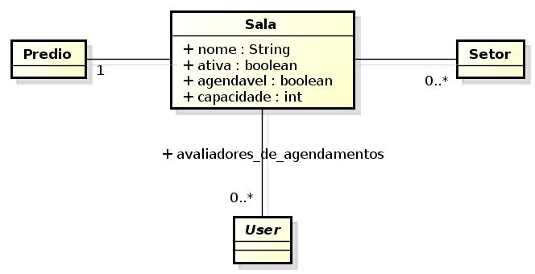

|
IFRN
COORDENAÇÃO DE SISTEMAS DE INFORMAÇÃO (COSINF)/DIGTI/RE
|
|||
|---|---|---|---|---|
PROCESSO DE SOFTWARE PARA A COSINF (COSINF-SUAP) |
||||
Especificação de Caso de Uso (ECU) |
||||
Nome do Projeto: |
Comum |
|||
1. UC 01 - Manter Sala <v0.1>¶
Especialista do Caso de Uso Abstrado CRUD
Conteúdo
1.1. Histórico da Revisão¶
Data |
Versão |
Descrição |
Autor |
|---|---|---|---|
18/02/2014 |
0.1 |
Início do Documento |
1.2. Objetivo¶
Este caso de uso possibilita que um usuário cadastre, liste ou altere uma sala.
1.3. Atores¶
1.3.1. Principais¶
Operador de Chave (chaves_operador): responsável por manter o cadastro de salas.
Gerente do Patrimônio (patrimonio_gerente_sistemico): tem as mesmas atribuições do Operador de Chave.
1.3.2. Interessado¶
Não há.
1.4. Pré-condições¶
1.5. Pós-condições¶
Não há.
1.6. Fluxo de Eventos¶
1.6.1. Fluxo Normal¶
1.6.2. Fluxo Alternativo¶
1.6.3. Fluxo de Exceção¶
1.7. Especificação suplementares¶
1.7.1. Requisitos Não-Funcionais¶
Não há.
1.7.2. Requisitos de Interface¶
1.7.2.1. RI1 – Acesso ao caso de uso¶
Menu ADMINISTRAÇÃO > Cadastros > Salas
1.7.2.2. RI2 – Acesso a opção Cadastrar¶
O acesso a opção será efetuado a partir do botão “Adicionar Sala”
1.7.3. Requisitos de Informação¶
1.7.3.1. RIN1 – Listagem – critério de exibição, ordenação e filtro¶
- Campos para exibição
“Nome”, “Prédio”, “Setores”, “Ativa”, “Agendável”
- Campos para ordenação
“Nome”
- Campos para filtro
“Nome”, “Campus” (predio)
1.7.3.2. RIN2 – Campos para Cadastros¶
Informação |
Tipo |
Tamanho |
Valor Inicial |
Domínio |
Máscara |
|---|---|---|---|---|---|
Nome* |
Texto |
100 |
|||
Ativa |
Boolean |
||||
Predio* |
Seleção
(Combo Box)
|
||||
Setores |
Texto
(Busca Interativa)
|
||||
Agendavel |
Boolean |
||||
Capacidade |
Texto |
Numérico |
|||
Avaliadores |
Texto
(Busca Interativa)
|
1.7.3.3. RIN3 – Campos para Cadastros¶
Os mesmos definidos em RIN2
1.7.3.4. RIN4 – Campos para validar cadastro em duplicidade¶
“Nome”, “Prédio”
1.7.4. Regras de Negócio¶
Regra |
Descrição / Mensagem |
|---|---|
1.7.5. Mensagens¶
Código |
Descrição |
|---|---|
M3 |
Sala com este Nome e Prédio já existe. |
1.8. Ponto de Extensão¶
Não há.
1.9. Questões em Aberto¶
Não há.
1.10. Esboço de Protótipo¶
Não se aplica.
1.11. Diagrama de domínio do caso de uso¶
1.12. Diagrama de Fluxo de Operação¶
Não há.
1.13. Cenário de Testes¶
1.13.1. Objetivos¶
1.13.2. Casos e Registros de Teste¶
1.13.2.1. Fluxo de Exceção FE1¶
Objetivo |
|
|---|---|
Dados de Entrada |
|
Resultado Esperado |